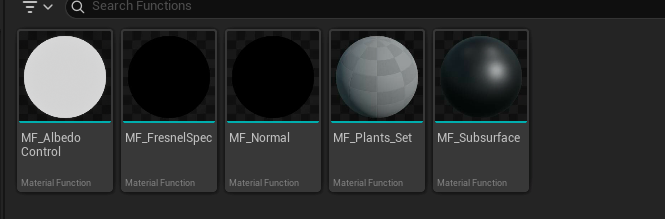
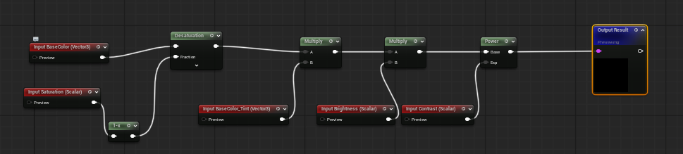

第 7 周
这是从 VAT 到 Unreal 的流程文件
已完成：
待办事项：
-
把 Itim 有动画的树从 Houdini 汇入 Unreal
-
制作镜头 3 的布局
-
研究葡萄风信子、叶子与茎的 shader
这周我们定义了镜头。第一个镜头是叶子从土里破土而出，土壤要用 Gaussian Splatting。镜头 3：低角度看葡萄风信子绽放。镜头 4：绽放的动画转场到用 Gaussian Splatting 做的大场景。
这是我们这周探索的布局，下面是它的参考。

我也研究了如何在 Unreal Engine 中使用 Material Functions，让我们能在主材质中定义参数，再于材质实例中覆写贴图或调整数值。

这是 MF_AlbedoControl Function 的内部：这个节点图设计成可控的颜色流程，不需更动原始贴图就能调整饱和度、色调、亮度与对比。

这是 MF_FresnelSpec Function 的内部：这个节点图结合高光强度与菲涅耳效果，做出可控、随视角变化的表面高光。

这是 MF_Normal Function 的内部：透过缩放红色与绿色通道控制法线强度，同时保留蓝色通道以维持正确的法线方向。

这是 MF_Subsurface Function 的内部：这个节点图结合贴图选择、颜色控制、色调变化与强度调整，建立弹性的次表面流程。

这是 MF_Plant Set：这个节点图是模组化的主材质，分成三个阶段：参数设定、材质处理与最终输出。albedo、法线、高光、粗糙度、自发光与次表面等可调控制项，各自透过专属的 function 独立处理，再组合成最终的材质输出。这个结构让 shader 在 Unreal Engine 中算植物时可重复使用又有弹性。


这展示了我如何建立材质实例并调整参数，把主材质套用到叶子上。
-
把葡萄风信子转成粒子
-
用 PCG 制作镜头 3 的布局